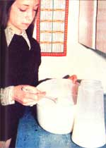
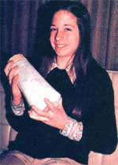
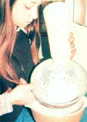
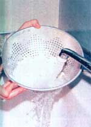
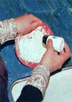
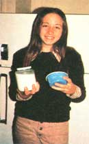

Who says butter-making has to be an exercise in tedium (or in the use of expensive gadgetry)? "It doesn't," says Linda Martin of Imber, Ore. "Not if you do it my way!"
Forget about buying an expensive cream separator or butter churn. Forget anything anyone ever told you about butter being hard to make. Because if you want to produce your own flavorful, creamy "high-priced spread" from fresh cow's milk, you can do it - quickly, easily, and without any expensive equipment - in just four easy steps. Here's how to make butter:
Start by pouring one gallon of milk (fresh from the cow) into a clean container. Chill the milk quickly and keep it in the refrigerator for at least 12 hours. Then skim the cream off the top of the fluid with a spoon. When you begin to see watery skim milk in the spoon, stop skimming.
Next pour the cream into a jar, cap the container tightly, and let it sit on the kitchen drainboard for approximately 12 hours (or until the cream is about 75 degrees Fahrenheit and smells slightly sour). This is called ripening or culturing, which is developing the acid content of the cream. (Only cultured cream will produce butter with a good "butter flavor".) Experience will teach you when your cream smells too sour or too ripe, and when it's just perfect. I usually set the cream on the drainboard after breakfast and make butter after supper the same day.
For this step, it's imperative that you use a jar which is only 1/3 full. (If you need to pour your cream into a larger container at this point, do so.) The "empty" two-thirds of the jar allows the cream to expand as you shake it ... and also allows the thick fluid to splash against the walls of the container more violently when the jar is shaken. (This splashing - technically known as concussion - is what turns cream into butter. It is the same action of churning, but without a butter churn.)
OK. Now sit down in your favorite chair and start shaking the 1/3-full jar of ripened cream, keeping in mind that concussion is what makes the butter form. Practice agitating the jar so that a heavy impact occurs between the cream and the walls of the container.
The length of time you'll have to shake the liquid before you'll begin to see butter depends on [a] the cream's temperature, [b] the enthusiasm with which you agitate the jar, and [c] the amount of cream in the container. Hence, it's better to look for butter rather than to try to make it "by the clock." (In case you're wondering, though, you'll usually have to continue shaking for 15 to 30 minutes.) What do you look for? Just before you get butter, you'll notice that the churned cream is becoming "heavy." Then you'll begin to see a definite separation between the buttermilk and a heavy mass of butter.
At this point, you don't really have butter yet, but you're very close so keep right on shaking the jar with somewhat less vigor. Within seconds, the heavy mass will turn yellow, become firm, and separate from the milk. Do not shake the jar much beyond the point where the butter has formed into slightly firm granules. (Unless you want a harder finished spread.)
Return to the kitchen now and strain the butter from the buttermilk with the aid of a colander or other straining device. (And save that delicious buttermilk!) Then, while the solids are still in the colander, rinse them thoroughly with cold water. (Warm water will make the butter soft ... the warmer, the softer.) Your butter should now be crumbly, rather than a firm, solid mass.
Next, put the cultured butter in a bowl. (The size of the bowl will depend, of course, on how much butter you have. I sometimes save several days' cream for one large batch, in which case I need something larger than a cereal bowl.) With clean hands, work the butter around the sides of the bowl and tip it to one side to let the water run out.
After you've "worked" the water out of the butter, and the mass has become fairly firm, sprinkle some salt over it (I use about a half teaspoon of salt per half pound of butter). Work the salt in, turn the butter over, and work it in some more. Taste the butter, and if necessary, add more salt.
All that's left now is to put your lusciously creamy homemade spread into a covered container, place the buttermilk in a capped jar or bottle, and store both containers in the refrigerator until needed. (Note: If I know we'll be using our butter within an hour or two, I'll leave it on the drainboard to keep it soft and spreadable.)
The procedure outlined above is fairly simple and offers little opportunity for error. Still, things can go wrong now and then. I've had my own share of failures and setbacks over the years, and so far, this is what I've learned:
1. If the butter is too sour and doesn't have a "fresh" taste, the milk was probably not "clean."
2. If the spread turns out too soft, either the cream was allowed to become too warm (more than 75 degrees) or it wasn't sufficiently churned. A good general rule here is: If the butter takes less than 10 minutes to form, the cream was probably too warm; more than 35 or 40 minutes, and the cream was too cold or the jar too full.
3. Sometimes the butter is overly hard. In this case, the cream may have been too cold to begin with, or the butter may have been overworked or overchurned.
4. When the finished spread is waxy and sticks to the roof of your mouth, it's usually because the rinsed butter was overworked.
5. If the butter "sweats," it may not have been rinsed thoroughly enough, or the salt may not have been mixed in as well as it should have been.
One additional comment: The above recipe was developed for use with cow's milk only. While goats remain my favorite all-round animal, I've never found an easy way to separate the cream from goat's milk without the use of an expensive (much too expensive for our family) cream separator. Every time we've tried to use goat's milk in the above recipe, it seems we've had to let the milk stand for several days before any cream would rise. And by that time, the cream has always developed a definite "goaty" flavor (which my family doesn't like). Go ahead and use goat's milk if you wish, but don't expect the same kind of results you'll get with cow's milk. See also: Goat Milk Butter: Make it Without a Separator; How to Make Butter From Goat Milk
Ron (my husband) and I, and our children - aided by a Jersey cow with a high butterfat content - use the above method to make creamy, melt-in-your-mouth, homemade butter just about every night of the week. It's a family project at our house: The children even carry on a running debate about who can make the "best" butter. It's easy, it's fun, it's inexpensive to make butter at home (you don't need any costly equipment when you use this skim-and-shake method) ... and the final product must be tasted to be believed.
If there is a better and/or less expensive way to make - and enjoy - real butter down on the family mini-farm, I haven't found it!
See also:
Homemade Butter and Buttermilk Recipes Wanted
Butter Churn Recommendations Wanted|
 Twelve-year-old Tiffany Martin skims cream from one gallon of fresh milk and places the cream in a container with a tight fitting lid to let it "ripen," or become cultured cream. This step is necessary if you want to make cultured butter. |
 The cultured cream (no more than 1/3 of a jarful at a time) is shaken vigorously until Tiffany sees the butter starting to form and separate from the buttermilk. |
 When the butterfat comes out of suspension, and you can see butter and buttermilk in the jar, this tells you that it's time to strain the contents of the jar in order to separate the butter from its buttermilk. (Save the delicious homemade cultured buttermilk for baking!) |
|
 Tiffany then rinses the new butter under cold water until the last traces of buttermilk are washed away. |
 The butter is next "worked" to remove the water, and salt is added, to taste. |
 Last step: top-quality cultured butter and cultured buttermilk are ready for the fridge! |